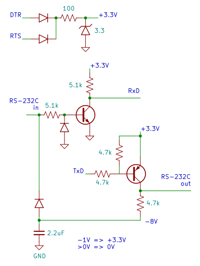

Hi Todd,
From your resume, we are definitely interested in your skill set. We would like you to answer the following test question to help us further gauge your abilities:
Assume that a small, portable device is being developed to measure the speed of a bullet fired from a handgun. An average bullet speed is 1000 mph, and the device should function in range of 300..3000 mph with the measurement error not exceeding 5% throughout the whole range of speeds.
The device's sensor consists of two coils (inductors) that report a pulse when a bullet flies through them. The pulses are already amplified to LVTTL 3.3V levels. As the software engineer, your responsibility is to measure the time difference between the two pulses and convert it into a numeric reading (in miles per hour.)
The device uses an Atmel AVR MCU and displays the number on a 4-digit LED display (multiplexed, common anode.)
One obvious concern here is that the AVR MCU may be somewhat slow, and the precision of the measurement may be unacceptable. Please ascertain the factors involved, and propose whatever it takes to ensure the quality of the measurement.
Please provide the source code (C) for the AVR microcontroller. The device, upon application of power, should display nothing. After each test shot the speed is displayed.
Christina
Hi Christina,
I was pleased by your question, and I took it as an excuse to play around a little with a microcontroller to do some interval measurements.
I don't have an AVR, so I used the MSP430 I have. The development board consists of just a header board and a watch crystal (you can see it in one of the pictures). It is well-supported by open tools. I used msp430gcc, and I included the C source as an attachment.
So I will describe the test setup I used, my thinking on the precision issues, and the code that I wrote.
The problem is to measure the A/B time between the two pulses with adequate accuracy and resolution. I will assume that the distance between the sensors is one meter.
For the given speed range, the interval A/B is actually kind of long. Three thousand mph sounds fast, but it works out to an A/B interval of about 750 microseconds through the one-meter path. Three quarters of a millisecond.
If you do the arithmetic at this upper end in terms of speed, it turns out that you need to resolve approximately 35 microseconds in your time measurement to meet the five percent velocity accuracy specification. If you're counting clock ticks, the clock need only tick about 28 kHz or so, minimum. That's not very fast.
I wanted to conveniently simulate the output of the sensors, so I could run the code I developed for real. I used a Tektronix function generator to provide the pulses, ran the pulses through a flip-flop arranged as a divide-by-2, and took the two outputs from Q and Q-bar:
This gives me two separate pulses, out of phase, and I can conveniently vary the time between them with the function generator knob. The time here is independent of duty cycle, and depends only on the generator frequency.
The setup is convenient, and also isolates (to some extent) my msp430 board from the function generator, so I am less likely to fry the former.
Here are some pictures of the setup:
The MSP430 has a flexible clock system. You can use a real crystal, up to 8 MHz I think. But my board uses just a simple 32768 Hz watch crystal. This is not very limiting, because the MSP430 can clock off of an on-chip high-frequency oscillator, which is disciplined to the watch crystal through a software loop. It also has abundant I/O, timers, and my version has at least two built-in UARTS. (It's cheap, too.)
With this system I was able to do measurements of A/B time to an accuracy of 5 microseconds or so. I could probably do better, but this already greatly exceeds the required accuracy.
I run the onboard clock at 1.536 MHz, and use the timer_A capture facility to timestamp the rising transitions on the input. The timer ticks themselves are sub-microsecond resolution.
This clock speed is also convenient to run the on-chip UART at 9600 baud. This lets me conveniently communicate with the device over a serial line. I wrote a little command-line interface with which I can specify various measurements to be made, and reported via the serial line.
The microcontroller itself hangs off of the RS-232 port of a spare linux machine. It draws its power from the serial port, via a circuit that I had already built up from a previous project. This circuit also does the necessary level conversion from bipolar RS-232 to CMOS logic levels:

Picture of MCU and interface circuit hanging off the serial port of a linux machine:
To recap, the setup goes like this: Function generator to flip flop to get two outputs to measure, A/B. Those A/B outputs go to the MSP430, which hangs off the serial port via another circuit which powers it and level shifts. (The MSP430 also connects to the parallel port, and that's how I download code to it.)
The attached C file is the complete source code, except for a standard module which at startup initializes the clock (in this case, to 1.536 MHz), as sketched above.
The actual measurement code ended up being simple and flexible. The measurements are done by setting up a timer_A capture of an appropriate transition. When that happens, you get an interrupt and the timer value is stored in a register. While you are waiting for such an event, you sleep.
It would be trivial to add commands to compute duty cycle and other things of interest.
Here is a typescript from a recent session. At the slow end:
AE3K interval timer for MSP430
time -- measures and reports time elapsed between leading edges
freq -- frequency, determined from measuring one cycle
timeAB -- A/B interval timer, two different inputs
bullet -- A/B interval, interpreted as velocity across 1 meter
Command> time
period of A: 22615 ticks, 14723 microsecs
Command> freq
frequency of A: 67 Hz
Command> timeAB
A/B interval: 11309 ticks, 7362 microsecs
Command> bullet
bullet speed: 303 mph
Command>
Then I went to the function generator and cranked it up:
AE3K interval timer for MSP430
time -- measures and reports time elapsed between leading edges
freq -- frequency, determined from measuring one cycle
timeAB -- A/B interval timer, two different inputs
bullet -- A/B interval, interpreted as velocity across 1 meter
Command> time
period of A: 1087 ticks, 707 microsecs
Command> freq
frequency of A: 1414 Hz
Command> timeAB
A/B interval: 544 ticks, 354 microsecs
Command> bullet
bullet speed: 6338 mph
Command>
I have a very accurate frequency counter hooked up also, so I can actually measure the accuracy. The actual period is 708.39 microseconds. The accuracy here is well more than specified (and the corresponding bullet speed is also twice the required maximum). I will omit the details, but the system as it is clearly does quite a bit better than required by the problem, throughout its range.
Well, I enjoyed the little project. From what I've been able to figure out looking at your web page, and from the attitude that I perceive from your posts and your question, I am very interested in discussing with you further how I might be able to work on your projects.
Sincerely,
Todd Doucet